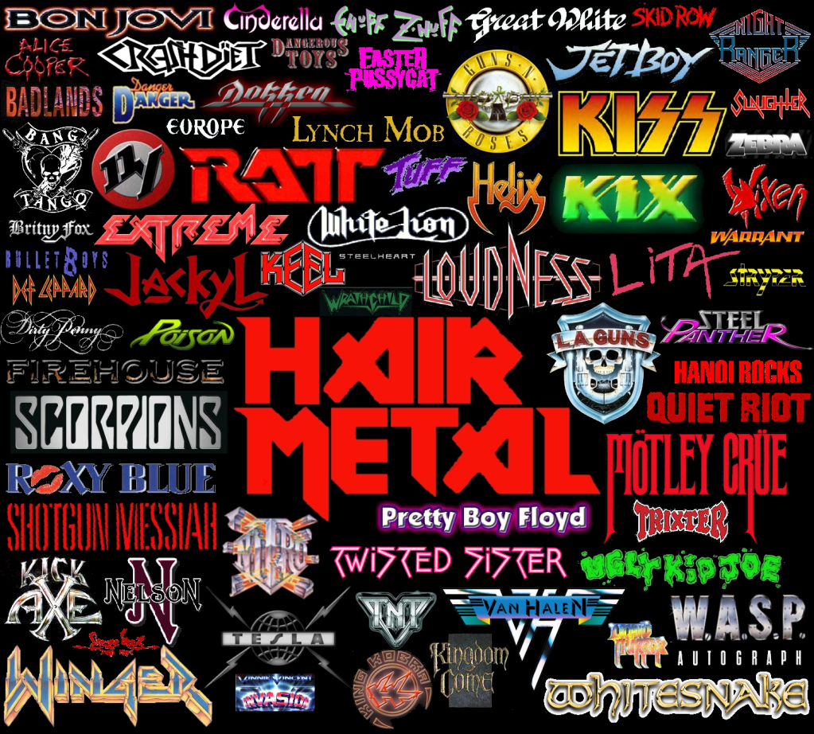

Historia del Rock y el Metal
La historia del rock y el metal es vasta y compleja. El rock and roll se originó en los Estados Unidos a finales de los años 40 y principios de los 50 como una mezcla de blues, jazz, country y gospel. Figuras como Chuck Berry, Little Richard, y Elvis Presley lo llevaron a la popularidad. En los años 60, el rock se diversificó en muchas direcciones con la invasión británica (The Beatles, The Rolling Stones), el folk rock (Bob Dylan), el psicodélico (Jimi Hendrix, The Doors) y el garage rock. En los 70s, el rock progresivo (Pink Floyd, Yes), el glam (David Bowie, T. Rex), y el punk (Ramones, Sex Pistols) cambiaron el paisaje musical. En este mismo periodo, el heavy metal nació como un subgénero del rock con bandas como Black Sabbath, Led Zeppelin y Deep Purple, caracterizado por riffs pesados y temáticas oscuras. Durante los 80s, el metal se ramificó en géneros como el thrash (Metallica, Slayer), el glam metal (Mötley Crüe, Poison), y el black metal y death metal en escenas underground de Europa y América. El hard rock también alcanzó nuevas alturas con bandas como Guns N' Roses y AC/DC. Los 90s vieron el auge del grunge (Nirvana, Pearl Jam), el nu metal (Korn, Limp Bizkit), y una renovación del metal progresivo (Dream Theater, Tool). El rock alternativo se convirtió en la corriente principal con Radiohead, Red Hot Chili Peppers, entre otros. En el siglo XXI, el rock y el metal han seguido evolucionando con fusiones con la electrónica, el metalcore, djent, post-metal, y una renovada escena underground global. A pesar de los cambios en la industria musical, el espíritu rebelde y potente del rock y el metal sigue vivo.
